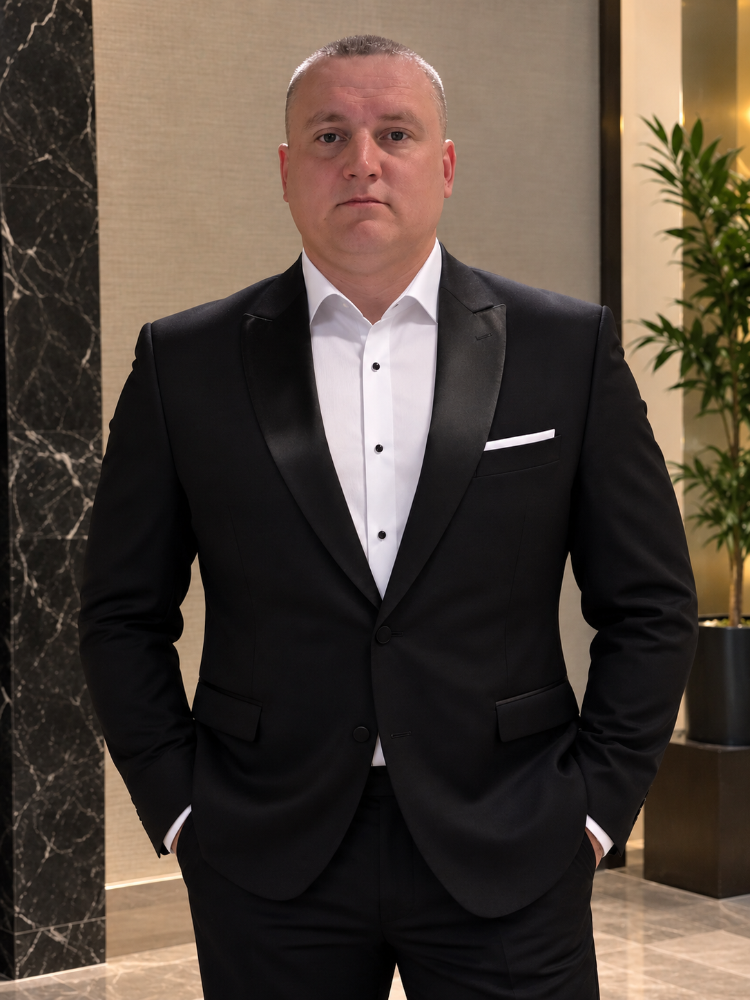

Специальность «Эксплуатация машин и оборудования промышленности». Квалификация — техник-механик. Диплом получен 30 июня 2016 года.
Персональный сайт · Республика Казахстан
Пахомов
Дмитрий
Васильевич
Личная история, семья, образование, профессиональный путь, путешествия и важные события жизни.
Моя биография
Обо мне
Биография
Пахомов Дмитрий Васильевич родился 1 февраля 1987 года. Живёт в Республике Казахстан, Карагандинской области, посёлке Актау в районе города Темиртау.
На этом сайте собраны сведения о моей жизни, семье, образовании, профессиональном пути и путешествиях.
Дата рождения1 февраля 1987 года
Место проживанияКазахстан · Карагандинская область · Актау
Рост197 см
Вес110 кг
Личные ценности
Семья
Семья занимает важное место в моей жизни. Моя супруга — Пахомова Наталья Владимировна (девичья фамилия Тычинина). Мы заключили брак 23 ноября 2012 года. Для меня семья — это взаимное уважение, доверие и поддержка.
Знания и развитие
Образование
Обучение по направлению «Механика и металлообработка», программа бакалавриата.
Профессиональный путь
Профессиональная деятельность
Моя профессиональная деятельность связана с промышленной техникой и механизацией. Работал механиком, в настоящее время занимаю должность начальника участка механизации в АО «Карцемент».
Новые впечатления
Путешествия
Путешествия и новые впечатления занимают особое место в моей жизни. В этом разделе со временем появятся фотографии и истории из поездок.
На связи
Контакты
Мои открытые страницы: ВКонтакте.